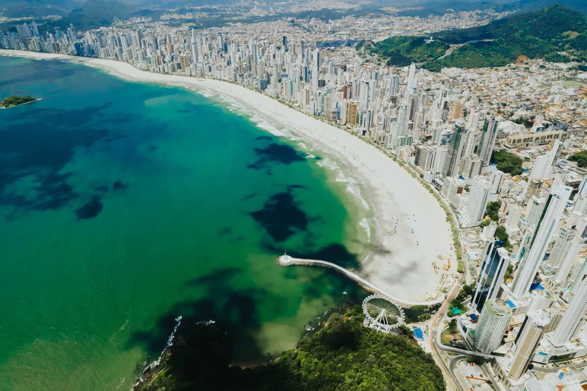
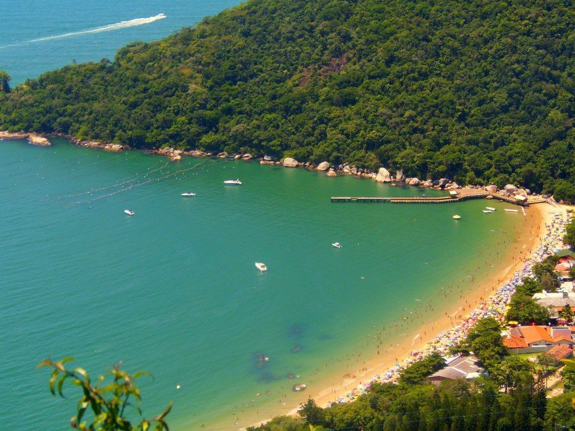
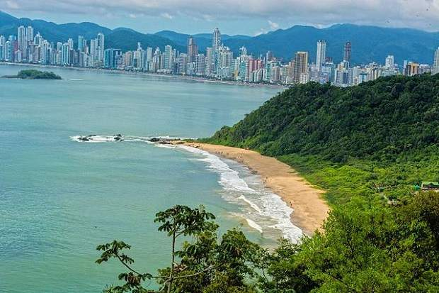
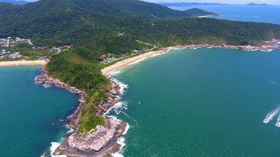

Praias

Além da famosa praia central, Balneário também possui outras 9 praias, cada uma com as suas particuláridades, tem praia pra quem gosta de um fluxo alto de pessoas, pra aqueles que estão procurando paz e sossego e tem tambem, pra quem quer pegar uma onda, aqui vamos falar sobre as principais praias da região e o que cada uma tem de melhor.
Praia Central
É a principal praia de Balneário Camboriú, e com quase 7Km de extenção ela abrange, de norte à sul, toda à área principal da cidade, e após o alargamento da faixa de areia, a orla passou a contar com 70 metros de largura, o que permite a incidência do sol o dia todo.
A orla, tem toda a sua extenção, regida pela avenida atlântica, o que permite passear por toda ela de carro, e a cidade, também, possui um ônibius que passa por toda à avenida, a mesma é repleta de restaurantes e bares, para todos os gostos, a praia é de fácil acesso, e mesmo sendo a praia mais procurada, os 70 metros de largura, permite que você se acomode tranquilamente na faixa de areia, porém vale lembrar, que a Avenida Atlântica não possui estacionamento, então, se você for de carro, terá que deixar ele estacionado em uma das ruas transversais da avenida.
Então resumindo, a praia central é perfeita pela comodidade, devido ao fácil acesso, e é ideal para você que gosta de desfrutar uma praia com bastante fluxo de pessoas, já que é a pria mais procurada da região.
Laranjeiras
É a segunda praia mais procurada da cidade, conhecida pelas suas águas calmas e seus belos resturantes à beira mar, portanto é perfeita para ir com a família, ela tem por volta de 750 metros de extenção e é toda regida pela mata atlântica, o que torna o visual dela incrível.
Para chegar nela, você tem duas opções, pela rodovia interpraias, onde você pode ir de carro, lá tem estacionamentos privados, onde você vai deixar seu carro em segurança, ou você pode ir de onibus ou uber também, o acesso é bem fácil portanto o deslocamento até lá é bem tranquilo. a segunda opção peloteleférico do parque unipraias, onde, além de conseguir ir até à praia de laranjeiras, você também póde desfrutar todas as atrações do parque, e se quiser saber mais sobre o parque, acesse o link ali em cima, que falo tudo sobre ele.
Em resumo, é isto, Laranjeiras é perfeita pra quem quer ter um dia agradável com sua família e desfrutar de bons momentos com ela.
Praia do Buraco
Localizada ao fim do Deck do pontal norte, esta praia tem um clima incrivel, para aqueles que gostam de estar em meio à natureza, já que ela é toda envolta pela mata atlântica, o mar nesta praia é mais revolto e a areia, do mesmo, é repléta de buracos, portanto, não é recomendado para crianças, porém, este fator, faz com que a praia tenha um fluxo menor de visitante, então se você está procurando um local mais sossegado e longe de grandes multidões, esta praia é ideal para você.
Praia do Pinho
Essa é pra você que gosta de curtir a praia da maneira mais natural possivel e está afim de bronzear o corpo todo, sem marquinhas, a praia do pinho é uma praia de nudismo, e é a unica da região, ela fica localizada à mais ou menos 13Km do centro de Balneário, o que dá aproximadamente, 20 min. de carro, ela é dividida em duas partes, onde a maior o nudismo é obrigatório e tem uma parcela menor dela onde você pode matar a curiosidade de vizitar uma praia de naturismo sem se aventurar em tirar seus trajes de banho.